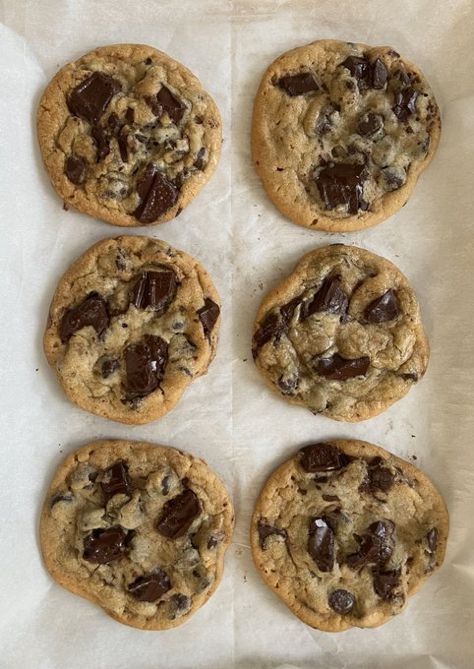

Home
Chocolate chip cookies

*Description:
...not found 404
*Ingredients:
- 1 cup salted butter softened
- 1/4 cup brown sugar packed
- 2 large eggs , can be subbed for 1/2 cup youghurt
- 3 cups all-purpose flour
- 1 teaspoon baking soda
- ½ teaspoon baking powder
- 1 teaspoon sea salt
- desired amt of dark chocolate , roughly chopped into 1/2 cm cubes
*Instructions:
- Preheat oven to 375 degrees Fahrenheit (190 degrees Celsius). Line three baking sheets with parchment paper and set aside.
- In a medium bowl mix flour, baking soda, baking powder and salt. Set aside.
- Brown the butter ina pan until slightly burnt.VERY VERY SLIGHTLY
- Mix the butter and sugar and slowly add the eggs/youghurt and mix until smooth
- Mix in the dry ingredients until combined.
- Add chocolate chips and mix well.
- Roll 2-3 Tablespoons (depending on how large you like your cookies) of dough at a time into balls and place them evenly spaced on your prepared cookie sheets.
- Bake in preheated oven for approximately 8-10 minutes. Take them out when they are just barely starting to turn brown.
- Let them sit on the baking pan for 5 minutes before removing to cooling rack.